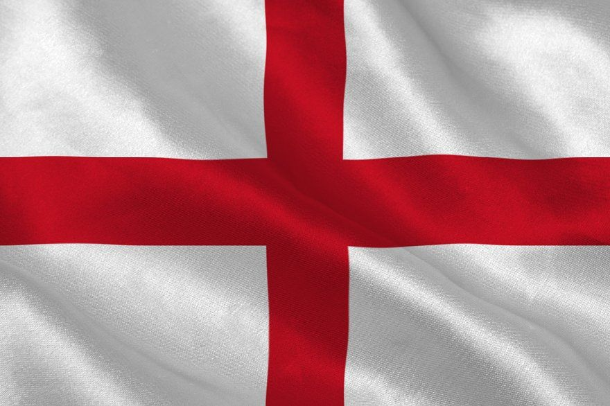
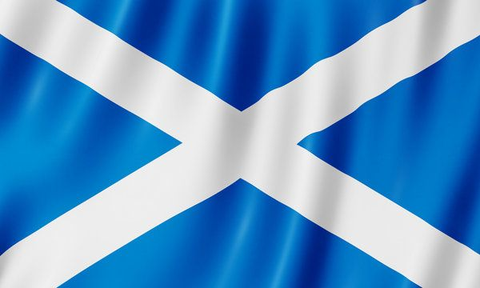
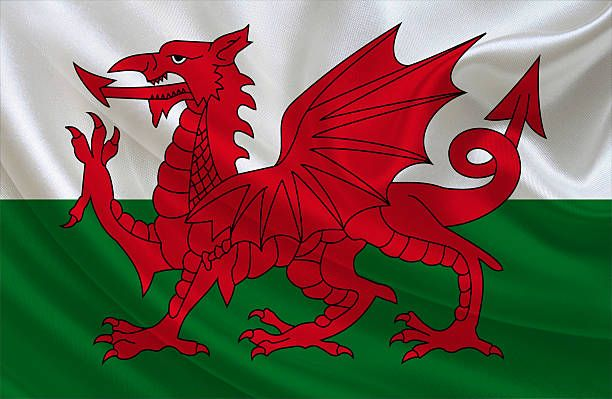
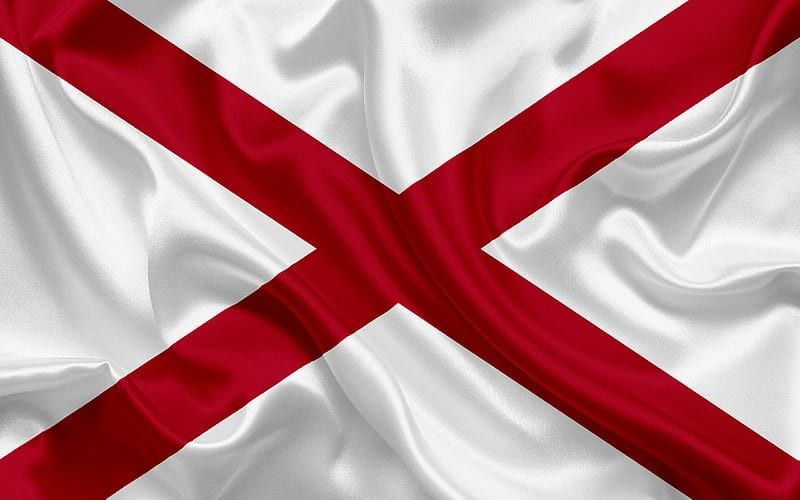
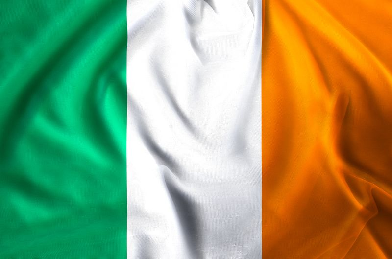

Bendera apa yang sedang kalian lihat ? pasti kalian akan menjawab Inggris, kan ? Jika jawaban Anda adalah Inggris, Anda tidak sendirian. Banyak orang memiliki anggapan yang sama. Namun, bendera ini adalah Union Jack, yang merupakan bendera resmi United Kingdom. Lalu, apa bedanya Inggris dan United Kingdom? Dan dalam pembahasan ini juga, saya akan membahas Britania Raya. Apa itu Britania Raya? Mari kita bahas satu per satu.
Apa itu Britania Raya ?
Sebelum kita membahas apa itu Britania Raya, kita harus tahu dulu apa itu British Isles. British Isles atau dalam Bahasa Indonesia Kepulauan Britania adalah sebuah kepulauan yang terdiri dari dua pulau utama, yaitu Pulau Britania Raya dan Pulau Irlandia. Kepulauan ini terletak di sebelah barat laut benua Eropa.
Setelah memahami apa itu British Isles, sekarang mari kita fokus pada salah satu pulau utamanya, yaitu Pulau Britania Raya. Britania Raya adalah sebuah pulau terbesar pertama yang terdiri dari tiga negara, yaitu Inggris, Skotlandia, dan Wales.
Sementara itu, Pulau Irlandia adalah pulau terbesar kedua di British Isles. Di Pulau ini ada dua negara, yaitu Republik Irlandia atau sering disebut Irlandia dan Irlandia Utara. Penting untuk dicatat bahwa Republik Irlandia adalah negara berdaulat yang terpisah dari United Kingdom.

Bendera Inggris

Bendera Skotlandia

Bendera Wales

Bendera Irlandia Utara

Bendera Republik Irlandia
Apa itu Inggris ?
Inggris merupakan negara konstituen bagian dari United Kingdom. Apa yang dimaksud dengan negara konstituen? Jawabannya akan kita bahas tuntas di segmen apa itu United Kingdom.
Apa itu United Kingdom ?
United Kingdom atau bisa disingkat menjadi UK adalah negara yang disusun oleh 4 negara konstituen, yaitu Inggris, Skotlandia, Wales, dan Irlandia Utara.
Negara konstituen adalah sebuah negara yang memiliki identitas nasional, budaya, dan sering kali sistem hukum yang berbeda, namun merupakan penyusun dari sebuah negara berdaulat (sebuah negara yang lebih besar).